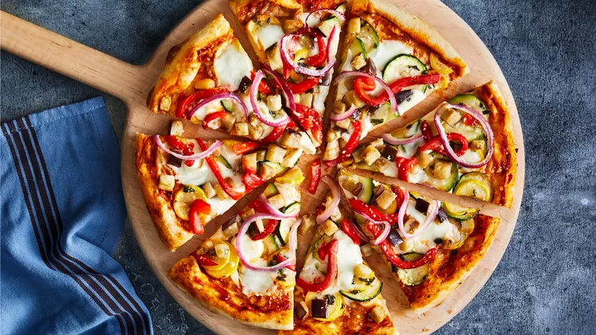

Pizza Recipe

Description
Homemade pizza crust is slathered in buffalo and
vegan blue cheese dressing,then topped with spicy chick'n
and Pepperjack cheese.
Ingredients
- Pizza Toppings
- 12 oz vegan chicken-style strips shredded or chopped
- 3/4 cup vegan-friendly buffalo sauce
- 1/4 medium red onion or 4 scallions thinly sliced
- 1/2 cup vegan blue cheese dressing
- 1 cup Daiya Pepperjack Cutting Board Collection shreds
- Pizza Crust
- 3 1/2 cups bread flour
- 1 1/2 cups lukewarm water
- 1 0.25 oz packet instant yeast
- 1 tablespoon white sugar
- 2 teaspoons salt
- 2 tablespoons olive oil
Steps
- In the bowl of a stand mixer, combine all ingredients on medium speed with the paddle attachment.
(If working by hand, stir together all ingredients in a medium bowl with a wooden spoon or spatula.)
- Switch to the dough hook attachment and knead on medium speed for 5 minutes, until dough is smooth and elastic.
(If working by hand, turn dough out onto a lightly-floured surface and knead 8-10 minutes, until dough is smooth and elastic.)
- Lift dough out of bowl, then drizzle bowl with olive oil. Return ball of dough to bowl, turning to coat with oil.
Cover and allow to rise in a warm place 45-60 minutes, or until roughly doubled in size.
- Turn dough out onto a lightly-floured surface. Divide into two, and shape each half into a ball.
(At this point, you can refrigerate or freeze one of the crusts for another day.)
Allow to rest for 10-15 minutes to allow the gluten to relax. In the meantime, preheat oven to 450°F.
If you have a pizza stone, preheat it in the oven during this time.
- In a medium bowl, toss chopped vegan chicken with 1/3 - 1/2 cup buffalo sauce, depending on how spicy you like things.
- Roll dough out to 14” round (depending on how thin you prefer your crust, and the size of your baking pan).
If using a pizza pan, you can sprinkle it with cornmeal if you like. If using a stone, you can prepare your pizza peel
or transfer pizza dough onto a tRoll dough out to 14” round (depending on how thin you prefer your crust, and the size of your baking pan).
If using a pizza pan, you can sprinkle it with cornmeal if you like. If using a stone, you can prepare your pizza peel or transfer pizza dough
onto a thin sheet of parchment to slide it onto the stone.
- Pour about 1/4 cup buffalo sauce and 1/3 cup vegan blue cheese dressing onto the pizza crust and spread evenly. Spread buffalo chicken and red onions
or scallions over top. Sprinkle pepper jack shreds over all.
- Bake in preheated oven 12-15 minutes, or until cheese is melted and crust is golden brown. Allow to cool for a few minutes before slicing and serving.
You can finish it with an extra drizzle of buffalo and blue cheese dressing, and an extra sprinkle of sliced scallions, if you like.
Return to main page